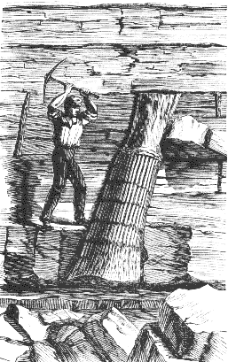

Fósseis de árvores "poliestratas"
Direitos autorais © 1994-1997 por
Andrew MacRae
{kind=link}

Algumas apresentações criacionistas incluem alegações sobre "fósseis polístratos". A partir da descrição, este termo é usado para fósseis que intersectam várias camadas (leitos), geralmente em rochas sedimentares. Embora frequentemente usado na literatura criacionista, não consegui determinar a origem do termo – não é um termo geológico padrão. Isso torna difícil para os leigos encontrar literatura convencional sobre esses fósseis. Esta apresentação tenta explicar o que são "fósseis polístratos" e oferece uma crítica às alegações feitas sobre eles. Se você tiver alguma dúvida, sinta-se à vontade para entrar em contato com o autor por e-mail. Já vi muitos exemplos de fósseis "polístratos" no campo.
Fósseis "poliestratos" são um problema para a geologia convencional?
Bem, eles não eram um problema para explicar no século XIX, e ainda não são um problema agora. John William Dawson (1868) descreveu um local clássico do período Carbonífero em Joggins, Nova Escócia, onde há árvores gigantes de licopódio eretas com até alguns metros de altura, preservadas principalmente em arenitos depositados por rios. Essas árvores possuem extensos sistemas radiculares com raízes finas que penetram no sedimento subjacente, que é ou uma camada de carvão (ou seja, material vegetal comprimido), ou um arenito ou xisto argiloso intensamente enraizado (ou seja, um horizonte de solo). Dawson considerou e rejeitou qualquer coisa além de uma formação in situ para esses fósseis, e sua interpretação é muito semelhante às interpretações atuais de sedimentos depositados em planícies de inundação de rios. Uma característica interessante desses exemplos é a presença de fósseis de vertebrados (principalmente répteis pequenos) dentro do preenchimento dos troncos.
A razão pela qual estou usando Dawson em vez de uma referência mais recente é para enfatizar que muitos supostos "problemas" com a geologia convencional foram resolvidos há mais de 100 anos usando princípios muito básicos. As pessoas que sugerem que esses "problemas" existem estão tanto desatualizadas que até a literatura do século XIX refuta suas apresentações.
|
 Uma árvore ereta preservada nos penhascos em Joggins, Nova Escócia. Figura 35 de Dawson [1]. |

Estratigrafia em associação com um tronco de árvore ereto, Joggins, Nova Escócia. Figura 41 de Dawson [1] Legenda Original: "1.=Xisto. 2.=Carvão argiloso, 1 pé. 3. Argila de base com raízes finas, 1 pé e 2 polegadas. 4. Arenito cinzento passando para baixo em xisto, 3 pés. Árvore ereta com raízes Stigmaria (e) no carvão. 5. Carvão, 1 polegada. 6. Argila de base com raízes, 10 polegadas. 7. Arenito cinzento, 1 pé e 5 polegadas. Raiz fina Stigmaria continuada do leito acima; Calamites eretos. 8. Xisto cinzento, com pirita. Plantas achatadas." |
Segue abaixo um post mais detalhado sobre árvores fósseis polistratas que apresentei anteriormente no talk.origins:
|
In article <1994May22.133828.562@alc-ohio.alc.com>
malone@alc-ohio.alc.com (Bruce Malone) writes:
"[...] Uma das melhores e mais antigas ocorrências de "floresta fóssil" é uma localidade conhecida como Joggins, em Nova Escócia. É do período Carbonífero e foi descrita pela primeira vez em detalhes no final do século XIX. Aqui está uma citação de Dawson 1868 (pp. 179-180) sobre a natureza das árvores nesta localidade, em uma bela seção de penhasco com mais de 1km de espessura: "No trecho [estratigráfico] do capítulo anterior, o leitor observará as palavras 'Underclay, Stigmaria [um tipo de tronco de árvore fóssil]' reaparecendo frequentemente; e sobre quase cada underclay há uma camada de carvão. Um underclay é tecnicamente o leito de argila que subjaz a uma camada de carvão; mas agora tornou-se um termo geral para um solo fóssil [ênfase de Dawson], ou um leito que outrora formava uma superfície terrestre e sustentava árvores e outras plantas; porque geralmente encontramos esses underclays de carvão, como os solos subterrâneos de muitos pântanos de turfa modernos, contendo raízes e troncos de árvores que ajudaram na acumulação da matéria vegetal do carvão. Os underclays em questão são, portanto, penetrados por inúmeros pequenos raízes longos, agora em estado de carvão, mas retendo o suficiente de sua forma para nos permitir reconhecê-los como pertencentes a uma raiz peculiar, a Stigmaria, de ocorrência muito frequente nas medidas de carvão, e outrora suposto ser uma planta de pântano de forma anômala, mas agora conhecida como pertencente a uma árvore igualmente singular, a Sigillaria, encontrada nos mesmos depósitos (Fig. 30). A Stigmaria deve seu nome às covas ou manchas regularmente dispostas deixadas por seus pequenos raízes, que se estendiam de todos os lados a partir dela. A Sigillaria recebeu seu nome das fileiras de cicatrizes de folhas que se estendem ao longo de seu tronco, o qual, em algumas espécies, é curiosamente estriado ou canelado. Uma das peculiaridades mais notáveis das árvores com raízes de stigmaria foi a disposição muito regular de suas raízes, que são quatro ao sair do tronco e dividem-se sucessivamente a distâncias iguais em oito, dezesseis e trinta e dois ramos, cada um emitindo, de todos os lados, um número imenso de pequenos raízes, estendendo-se para os leitos ao redor, de uma maneira que mostra que estes devem ter sido areia e lama moles na época em que essas raízes e pequenos raízes se espalharam por elas. Há muito pouco, com exceção da terminologia, que seria diferente em uma interpretação "moderna" dessas características, e Dawson tem muitos mais detalhes sobre as outras características sedimentológicas encontradas em Joggins que apoiam sua interpretação. Dawson registra mais de uma dúzia de horizontes com grandes árvores eretas, e as menores são ainda mais comuns. A seção em Joggins ainda pode ser visitada hoje, e é particularmente bem conhecida pelos fósseis de répteis pequenos encontrados lá (eles frequentemente ocorrem dentro dos tocos de árvores eretos, aparentemente eles caíram no toco oco). Geralmente há algumas árvores eretas expostas na costa, embora a erosão rápida das falésias de mais de 10m de altura signifique que os exemplos expostos mudam a cada ano. Dado que uma ocorrência "in situ" foi convincentemente determinada por observações feitas no século XIX para este e muitos outros locais de "floresta fóssil", é surpreendente que estas conclusões não tenham sido reconhecidas por criacionistas modernos do "dilúvio global da Terra jovem" [YEGF] como evidência clara de deposição não associada ao dilúvio global para grande parte do registro geológico. Eles frequentemente fundamentam seus argumentos atuais na ocorrência de árvores eretas no Parque Nacional de Yellowstone, apontam para seu ambiente vulcânico e, em seguida, indicam árvores eretas flutuantes no Lago Spirit perto do Monte St. Helens [2], dizendo: "Vejam? Elas poderiam ter sido transportadas durante o dilúvio.". Este argumento é completamente falacioso, porque a maioria das "florestas fósseis" não ocorre em depósitos vulcânicos e possuem as raízes frágeis dos tocos firmemente penetrando no sedimento circundante, muitas vezes em um paleossolo (solo fóssil) [além de Joggins, veja também 3]. Uma ocorrência está até associada a pegadas de dinossauros na mesma superfície, acima de uma camada de carvão [4, 5, 6]. O modelo de "tocos eretas flutuantes transportados" [2] é um completo distração que não se aplica à imensa maioria das ocorrências de "floresta fóssil". Quanto ao "problema" de Malone com os "milhares de anos" necessários para que a árvore permaneça em pé para que ocorra a "acumulação lenta", trata-se de um não-problema: ele está simplesmente interpolando as taxas médias de deposição de toda uma formação até a escala de metros. Isso não é a maneira correta de fazer isso, porque camadas individuais podem ser depositadas rapidamente (digamos, areias e lama durante a ruptura de uma barragem de terra) e, em seguida, pode ocorrer pouca deposição por muito tempo (por exemplo, um horizonte de solo), como observado em ambientes modernos de planícies de inundação de rios onde árvores ocorrem comumente. Em suma, ele está assumindo que geólogos convencionais interpretariam a ocorrência da maneira simples que ele interpolou; eles não o fazem. Uma das características mais convincentes dos comentários de Dawson, do ponto de vista de um criacionista do YEGF, podem ser as observações finais de seu livro, na seção de conclusão na p.671. Declarações expressando sentimentos semelhantes podem ser encontradas na maioria dos livros geológicos do período (por exemplo, "Silúrio" de Murchison, onde os sistemas Silúrico e outros Paleozóicos são definidos pela primeira vez):
"A observação paciente e o pensamento podem, com o tempo, nos permitir compreender melhor esses mistérios; e acho que podemos ser muito auxiliados nisso ao cultivar o conhecimento do Criador e Governante da máquina, bem como de Sua obra." Dawson não tem problemas teológicos com as conclusões que tirou, que são basicamente semelhantes às tiradas pelos geólogos hoje. Muitos outros geólogos da época eram profundamente religiosos e expressaram claramente esse fato em suas publicações. Aparentemente, muitos geólogos do século XIX compartilham uma estrutura filosófica comum com os criacionistas modernos, mas, estranhamente, os criacionistas modernos chegam a conclusões completamente diferentes tanto dos geólogos do século XIX quanto dos geólogos atuais. O apelo comum dos criacionistas modernos a uma estrutura filosófica "ateísta" ou "humanista" que "mancha" as interpretações da ciência é bastante ridículo à luz das fortes crenças de muitos cientistas históricos, particularmente em geologia. Por que os criacionistas ainda teriam um problema com suas conclusões, mais de 100 anos depois? Malone, juntamente com muitos "criacionistas do dilúvio global da Terra jovem", não têm ideia de que mesmo dados do século XIX, apresentados por um geólogo criacionista, são suficientes para demolir a parte sobre as "árvores fósseis polistratas" de sua apresentação. As "árvores fósseis polistratas" são provavelmente uma das peças de evidência mais fracas que os criacionistas da Terra jovem (YEGF) podem oferecer para sua interpretação. Gostaria que eles parassem de usá-la. |
Material Relacionado
Aqui estão algumas informações sobre a ocorrência de árvores fóssis no Parque Nacional de Yellowstone.
A ocorrência de um "fóssil de baleia em pé sobre a cauda" de Lompoc, Califórnia, é um clássico. Este é um artigo de Darby South.
Veja as seguintes informações sobre a formação de carvão.
Referências
[1] Dawson, J.W., 1868. Geologia Acadiana. A Estrutura Geológica, Restos Orgânicos e Recursos Minerais da Nova Escócia, Novo Brunswick, e Ilha do Príncipe Eduardo, 2ª edição. MacMillan and Co.: Londres, 694pp.
[2] Coffin, H.G., 1983. Troncos flutuantes eretos no Lago Spirit, Washington. Geology, v.11, p.298-299.
[3] Cristie, R.L., e McMillan, N.J. (eds.), 1991. Florestas fósseis do Terciário das Geodetic Hills, Ilha Axel Heiberg, Arquipélago Ártico, Geological Survey of Canada, Bulletin 403, 227pp.
[4] Parker, L.R. e Balsley, J.K., 1989. Minas de carvão como locais para o estudo de fósseis de rastos de dinossauros. IN: Gilette, D.D. e Lockley, M.G. (eds.), Dinosaur Tracks and Traces. Cambridge University Press: Cambridge, p.354-359.
[5] Parker, L.R. e Rowley, R.L., Jr., 1989. Pegadas de dinossauros de uma mina de carvão no centro-leste do Utah. IN: Gilette, D.D. e Lockley, M.G. (eds.), Pegadas e Rastros de Dinossauros. Cambridge University Press: Cambridge, p.361-366.
[6] Carpenter, K., 1992. Comportamento de hadrossauros interpretado a partir de pegadas no Grupo "Mesaverde" (Campaniano) do Colorado, Utah e Wyoming. Contribuições à Geologia, Universidade do Wyoming, v.29, no.2, p.81-96. [Este tem um mapa das pegadas de dinossauros e estigmas -- fig. 1]
Veja também Página de talk.origins de Andrew MacRae